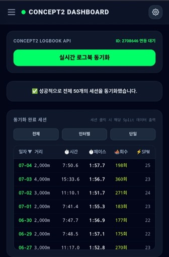
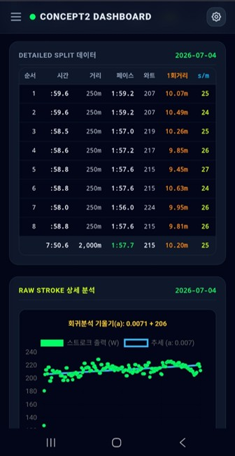
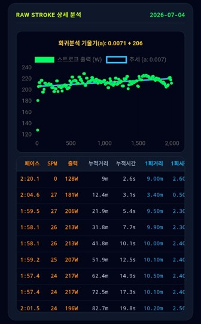
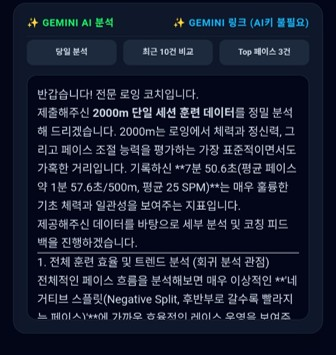
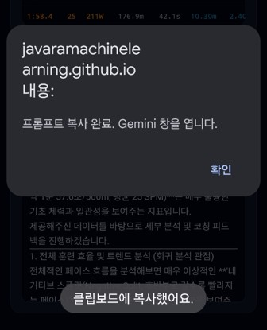
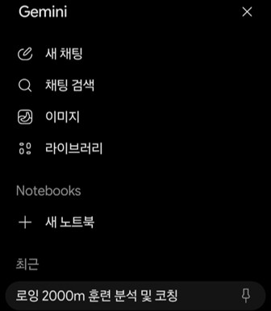
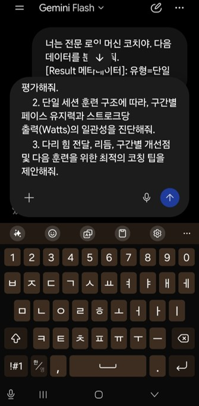
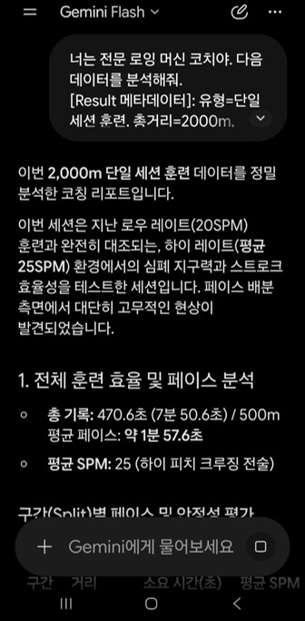

대시보드 완벽 마스터 가이드
이 분석 앱은 Concept2 서버에서 여러분의 기록을 가져와 한눈에 파악하기 쉽게 가공해줍니다. 데이터를 깊이 있게 쪼개어 보는 방법을 익혀보세요.
필수 선수 조건
Concept2 로잉머신과 연동되는 ErgData 앱 사용자를 위한 대시보드입니다.
타 브랜드 로잉머신이나 ErgData 앱을 사용하지 않는 분은 데이터를 연동할 수 없습니다.
드릴다운(Drill-Down) 분석 흐름 : 4단계
1. 운동 결과 조회
메인 리스트에서 훈련(인터벌/단일) 필터를 적용하거나 정렬하여 원하는 세션을 클릭합니다.

2. Split(구간) 데이터 확인
세션을 클릭하면 아래에 구간별 요약(Split) 테이블이 열립니다. 여기서 1회 거리와 출력(Watts)을 확인하세요.

3. Stroke 산점도 분석
특정 구간(행)을 클릭하면 그 아래에 해당 구간의 개별 스트로크 데이터가 산점도와 상세 표로 나타납니다. 기울기가 양수인지 음수인지 확인하며 체력 유지력을 진단하세요.

4. AI 분석 (구글 AI API key 등록 경우)
구글 AI API 키가 등록되어 있다면, 좌하단 ✨ Gemini AI 분석 버튼을 눌러 앱 내에서 즉시 코칭 결과를 볼 수 있습니다.

💡 구글 AI API 키가 없을 경우 (수동 복사)
우하단 '✨ Gemini 링크 (AI키 불필요)'를 누르면 전문 코칭 프롬프트가 자동으로 복사됩니다. 구글 제미나이(또는 챗GPT 등) 웹사이트에 그대로 붙여넣어 해답을 얻을 수 있습니다.



